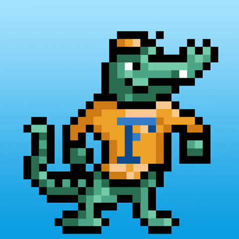
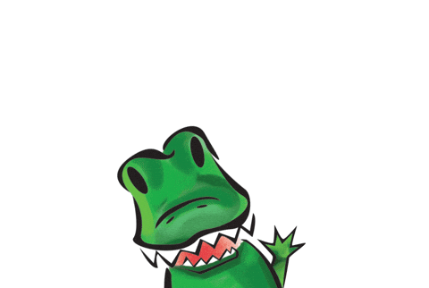

GIFs FTW!
Florida set out to be the best university on Giphy. In the process, UF became the first university to 1 billion GIF views — even outpacing non-higher ed brands like Google, Nike, Facebook, Starbucks and Taco Bell.
The goal
Beat Harvard. UF wanted to be associated with top academic institutions on social and saw an opportunity to go up against Harvard on Giphy.

The strategy
As Giphy grew into the backbone of social media expression —powering GIF keyboards inside iMessage, Twitter, Instagram, Slack, and virtually every major platform— having a strong Giphy presence meant embedding UF into everyday digital conversations. Owning key terms in GIF searches meant UF's content was getting seen and used by both our fans and our competitors.
The team built a deliberate library of over 2,500 GIFs and stickers covering game day moments, campus scenes, mascots and seasonal content designed to perform in search. The goal wasn't just views. It was ubiquity.


The competition
The benchmark was Harvard. But as UF's numbers climbed, a new comparison emerged. Florida wasn't just battling other universities, it was dominating major brands. By July 2021, UF's 4 billion views placed it above Google, Nike, Facebook, Starbucks, Taco Bell, McDonald's, Wendy's, Amazon, Coca-Cola, and Mercedes-Benz.
Versus the competition in higher ed
The comparison against Michigan tells the story clearly. Leaders and Best? With 1,000 uploads to Michigan's 288, Florida's 1.7 billion views at the time of the snapshot dwarfed Michigan's 32.7 million, a 52x advantage with roughly 3.5x the content volume. The gap wasn't just about output; it was about strategy.

GIFs IRL
The Pixel Albert the Alligator GIF became so popular on campus that the team built a larger than life-size physical version and hauled it around campus for students to snap and share. Photos of the installation spread organically across social media, extending the GIF's reach into the real world and back online again.


Another one of UF's alligator-themed GIFs appeared on a student's graduation cap at commencement. A GIF that had been viewed hundreds of millions of times online found its way into someone's most important day. That's not a metric, that's meaning.


The win
What started as a deliberate move to outrank Harvard became something much larger. Proof that a university social media team, with the right strategy and grit, could compete at the brand level with the most successful companies in the world. UF didn't just win in higher ed. They won on Giphy.